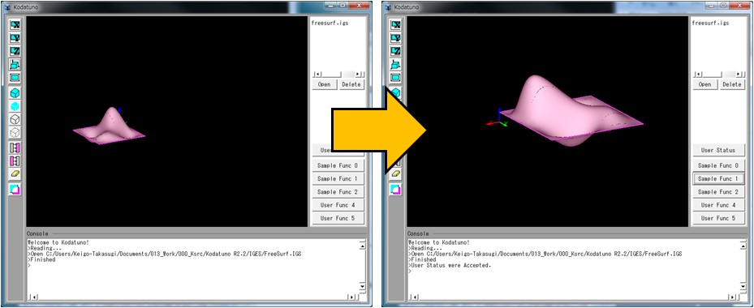

(Ex. 2) Bodyのアフィン変換
あるBodyに対して平行・回転・拡大・縮小などのアフィン変換を行う方法について解説します．
"SampleFunc1.cpp"のSmpTransBody()を実行します．
＜実行手順＞
- Kodatunoアプリケーションを起動し, 適当なIGESデータを1つ読み込みます．
- 表示されたBodyをピックします．
- "User Status"からMode2を選択し，"Sample Func 1"ボタンを押します．
- 選択したBodyの位置と大きさが変わったことを確認してください．

＜ソース解説＞
(Ex. 1)で解説したように，"Sample Func 1"をクリックしたので，"UserFunc.cpp"のExecSampleFunc1()が実行され，
さらにMode2を選択したことから，UserStat.Modeには1が代入されているので，SmpTransBody()が実行されます．
では，SmpTranstBody()を見てみましょう．
// Sample2: 指定したBodyに対しアフィン変換を行う
int SmpTransBody(BODYList *BodyList,OBJECTList *ObjList, int PickCount, double Prop[])
{
if(!PickCount) return KOD_ERR; // セレクションされていなかったら、何もしない
OBJECT *obj = (OBJECT *)ObjList->getData(0); // 一番最初にセレクションされたエンティティの情報を得る
BODY *body = (BODY *)BodyList->getData(obj->Body); // 一番最初にセレクションされたBODYの実体を得る
Coord rot_ax = SetCoord(0,0,1); // 回転軸
double deg = 90; // 回転角度
Coord shift = SetCoord(0,0,10); // シフト量
Coord expand = SetCoord(2,2,2); // 拡大量
body->RotBody(rot_ax,deg); // Z軸周りに90度回転
body->ShiftBody(shift); // Z方向に10シフト
body->ExpandBody(expand); // BODYを2倍に拡大
return KOD_TRUE;
}
まず最初の行(4行目)には，ピックされたオブジェクトの数がゼロ，つまり何も選択されていない状態でこの関数が実行された場合のエラー処理が
記述されています．ポカよけの意味でこの処理を冒頭に記述しておくことをおすすめします．
つづいて6行目では，一番最初にピックしたオブジェクトの情報を取り出しています．
この記述は2.5 サンプルアプリケーションの実行とソース解説 1
でも出てきました．本例では一番最初にピックしたものに限定していますが，実際のコーディングでは目的に応じて取り出すオブジェクトを変える工夫が必要です．
ピックしたオブジェクトの情報を取り出した後，その情報を元にBodyの実体を引っ張ってきます．それが7行目です．
OBJECT構造体のメンバー変数Bodyにはピックしたオブジェクトが属するBodyのインデックス番号が入っています．
このインデックス番号のBodyをBODYListから取り出しています．
この6, 7行目の2行はセットで使うことがほとんどです．C言語に自信のない人はとりあえずこの2行はおまじないとしてしまってください．
Bodyの実体を取り出したら，あとはそのBodyのメンバー関数を用いてアフィン変換を適宜行うだけです．
- BODY::RotBody()は指定した軸周りに指定角度Bodyを回転させます．
- BODY::ShiftBody()は指定したシフト量だけBodyを平行移動させます．
- BODY::ExpandBody()は指定した拡大量だけBodyを拡大/縮小させます．
ここで，Kodatunoでは3次元座標を扱うクラスとして"StdAfx.h"に定義されたCoordクラスを用います．
たとえば，15行目ではshiftという名のCoord変数を宣言すると同時に(0,0,10)という3次元座標値を代入しています．
Coordを使った種々の計算は"StdAfx.h"にかなり多く用意していますので，一通り見ておくとよいと思います．
以上で(Ex. 2)の解説を終了します．次からはNURBS曲線/曲面に対して種々の情報を取り出す操作を行っていきます．
まずは，NURBS曲線に対して指定した分割数で分割したときの分割点を生成する方法を示します．